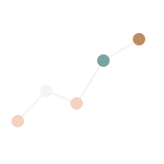
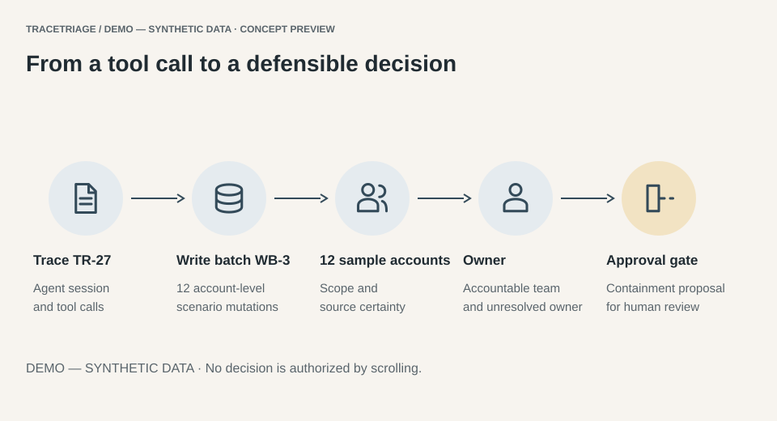

TraceTriage Incident Desk
Correlate the trace
A composed, architectural identity with editable incident evidence. This is an interactive design reference, not a live service.
Explore the kitThe original selected Option 4 is restored: its exact editorial letterforms and intertwined emblem are traced into SVG. The substitute-font redraw was rejected.
SVG lockups have outlined lettering. Favicons retain the original emblem; no substitute simplified symbol is approved. Clear space: quarter of mark width.
#F7F4EF#FFFFFF#EDE7DF#F3D3BF#934B32#733A28#334A59#202B32#2C211D#113F42#59646B#C9C1B8Newsreader display and Manrope UI. Twelve-column desktop grid, generous chalk margins, restrained copper actions and tabular data.
12 synthetic accounts · 8 observed · 3 inferred · 1 awaiting
14–16px UI baseline. Headings scale48–104px. Reading width65ch. Gutters20–64px. Section spacing56–128px.
Read the full Markdown specificationHover and focus are live. The first button demonstrates loading→truthful local completion. Nothing is sent.
Correlate the trace

Map impact and owners

Prepare human review
Preserve the timeline
Export into evaluations
Focus or inspect a motif to see its selected state. No authorization changes.

Unit: sample accounts. Counts classify source certainty, not customer outcomes.
| Account | Original | Scenario write | Evidence certainty | Owner |
|---|---|---|---|---|
| A-001 | Standard | Enterprise | observed | Maya Chen (fictional) |
| A-002 | Standard | Enterprise | observed | Maya Chen (fictional) |
| A-003 | Standard | Enterprise | observed | Maya Chen (fictional) |
| A-004 | Standard | Enterprise | observed | Maya Chen (fictional) |
| A-005 | Standard | Enterprise | observed | Maya Chen (fictional) |
| A-006 | Standard | Enterprise | observed | Maya Chen (fictional) |
| A-007 | Standard | Enterprise | observed | Maya Chen (fictional) |
| A-008 | Standard | Enterprise | observed | Maya Chen (fictional) |
| A-009 | Standard | Enterprise | inferred | Maya Chen (fictional) |
| A-010 | Standard | Enterprise | inferred | Maya Chen (fictional) |
| A-011 | Standard | Enterprise | inferred | Maya Chen (fictional) |
| A-012 | Standard | Enterprise — unverified | awaiting | Owner unresolved |
The unverified scenario tier is displayed as unverified. Exactly12 fixture accounts; no live record has changed.
The future qualification flow includes role, company, action type, current stack, incident owner and redacted-case availability. No sensitive uploads.

Generated imagery is fictional; it does not depict company offices, people or customers.